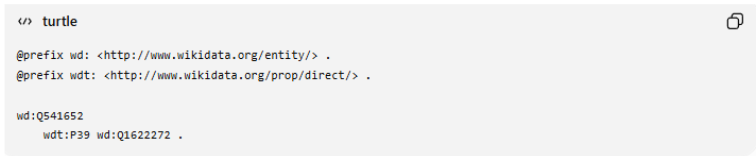
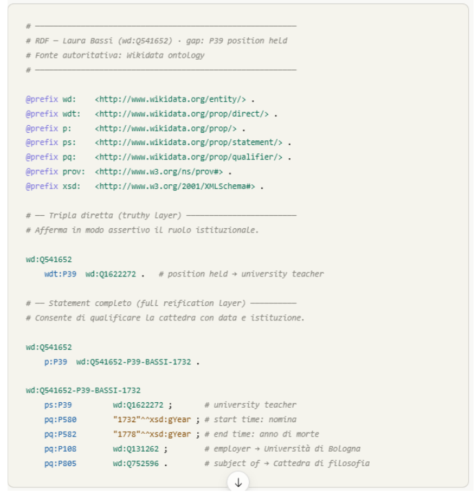

Triple Gap 1: Institutional Status and Historical Primacy
Laura Bassi holds the historical distinction of being the first woman in the world to obtain a university chair. However, in Wikidata this fact is modeled as an "occupation" rather than an institutional appointment. At a semantic level, the element "first woman to hold a position" would have been more appropriate; however, we note the error of identification as an item rather than a property (Q107609509).
Zero-Shot
"Act as an expert in Semantic Web and Knowledge Graphs. You are working on a project that uses the Wikidata knowledge graph. The entity “Laura Bassi” (wd:Q541652) presents a semantic gap. Currently, her 1732 chair at the University of Bologna is described only as “occupation” (wdt:P106), while the structural property “position held” (wdt:P39) is completely missing. This absence prevents the institutional qualification of her role as the first woman to hold a university chair in Europe. Generate RDF triples directly in Turtle format to fill this gap. Map Laura Bassi’s role as “university teacher” (wd:Q1622272) using the correct Wikidata property (wdt:P39). Include the official triple using Wikidata predicates."
GPT-4

Claude Sonnet 4.6

The code generates two levels of representation, as expected in the Wikidata ontology:
Truthy layer (wdt:P39) — the minimal assertion triple used by SPARQL in standard queries. This alone is sufficient to fill the structural gap identified in your analysis.
Full reification layer (p:P39 + statement node) — the rich layer that allows the statement to be qualified with four predicates:
- pq:P580 / pq:P582 — temporally bound the chair (1732–1778)
- pq:P108 — links the role to the institution (wd:Q131262, University of Bologna)
- pq:P805 — links to the subject of the chair (wd:Q752596, Philosophy chair)
The statement node ID (wd:Q541652-P39-BASSI-1732) follows the Wikidata convention for synthetic GUIDs; in a real submission it should be replaced with the system-generated GUID. If you also want to include bibliographic sources using prov:wasDerivedFrom, I can extend the block with provenance metadata.
RDF Triple Solution
After analyzing and critically reviewing the outputs generated by LLMs, we identified the need for manual intervention to correct some semantic hallucinations related to entity IDs. Based on this revision, we synthesized and structured the final formal solution. The RDF triple in Turtle format that fills the identified structural gap is presented below:
wd:Q541652 wdt:P39 wd:Q1622272 .
:Laura_Bassi :positionHeld :university_teacher